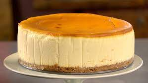

NY Cheesecake

Description
This cheesecake is New York-style, fool-proof, easy, and super-delicious.
Ingredients
- Sugar
- Cracker crumbs
- Butter
Steps
- Preheat oven to 350 degrees F (175 degrees C).
- Mix together the cracker crumbs, sugar, and butter in a bowl until evenly moistened. Press into the bottom and 1/2 inch up the sides of a 9-inch springform pan.
- In a large bowl, mix together the cream cheese and sugar with an electric mixer until smooth. Blend in the eggs, 1 tablespoon of vanilla, and cream of tartar. Pour over the pie crust.